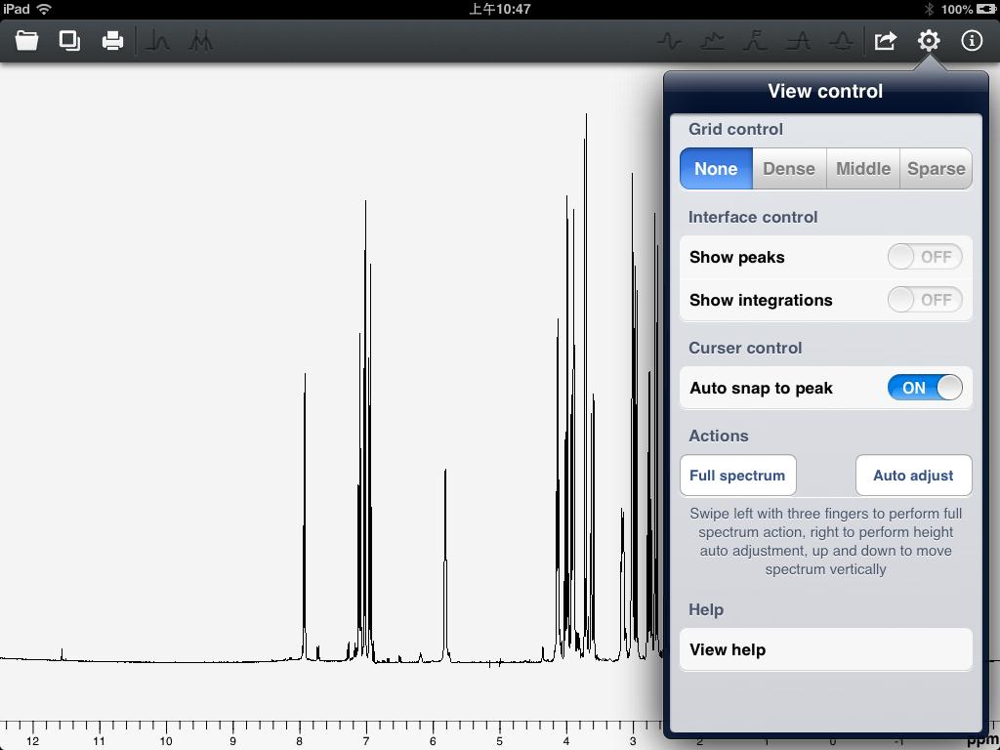
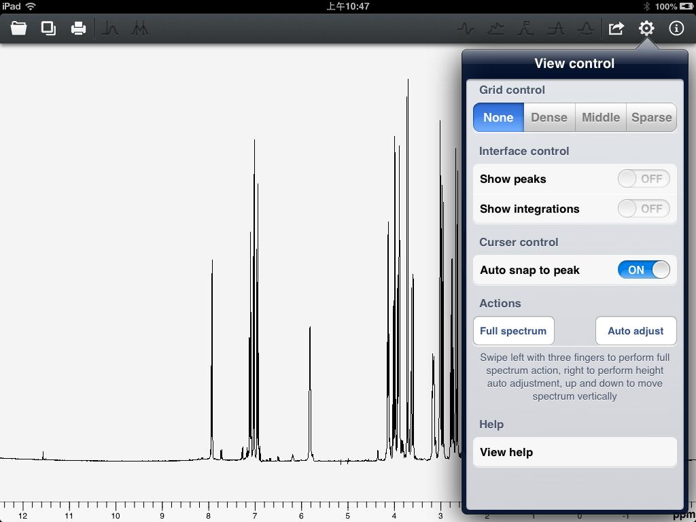

User Guide of Touch NMR
After version 1.2, Touch NMR implemented four orientations' control. Users can rotate to the appropriate direction.
This app takes full advantages of iPad's "multi-touch" function and gives users a good experience. Operations with one finger, two fingers or three fingers can have different functions. Clicking the spectrum can show or hide the toolbar. Pinch and pan with two fingers can zoom the spectrum. Swiping left with three fingers can display the full spectrum and swiping right can do the hight adjustment.
Clicking the "Settings" icon at the top of the main interface can accomplish more control of the spectrum. As shown in figure 29.

Figure 29
"Grid control" section can change the type of displayed grid. If you have done peaks search or integration operation, you can choose whether to display them in "Interface control" section. "Auto snap to peak" is only workable for the vertical cursor. When the switch is turned on, the cursor will move to the nearest peak automatically. Because touch operations are not as accurate as mouse click operations. It is helpful to the phase correction and reference. If the switch is turned off, the cursor will stay in current position. "Full spectrum" can display the full spectrum, which is the same operation as swiping left with three fingers. "Auto adjust" has the same function with swiping right with three fingers. In "Help" section, there is a button of "View help". Click this row, this help document will be presented.
This app takes full advantages of iPad's "multi-touch" function and gives users a good experience. Operations with one finger, two fingers or three fingers can have different functions. Clicking the spectrum can show or hide the toolbar. Pinch and pan with two fingers can zoom the spectrum. Swiping left with three fingers can display the full spectrum and swiping right can do the hight adjustment.
Clicking the "Settings" icon at the top of the main interface can accomplish more control of the spectrum. As shown in figure 29.

Figure 29
"Grid control" section can change the type of displayed grid. If you have done peaks search or integration operation, you can choose whether to display them in "Interface control" section. "Auto snap to peak" is only workable for the vertical cursor. When the switch is turned on, the cursor will move to the nearest peak automatically. Because touch operations are not as accurate as mouse click operations. It is helpful to the phase correction and reference. If the switch is turned off, the cursor will stay in current position. "Full spectrum" can display the full spectrum, which is the same operation as swiping left with three fingers. "Auto adjust" has the same function with swiping right with three fingers. In "Help" section, there is a button of "View help". Click this row, this help document will be presented.